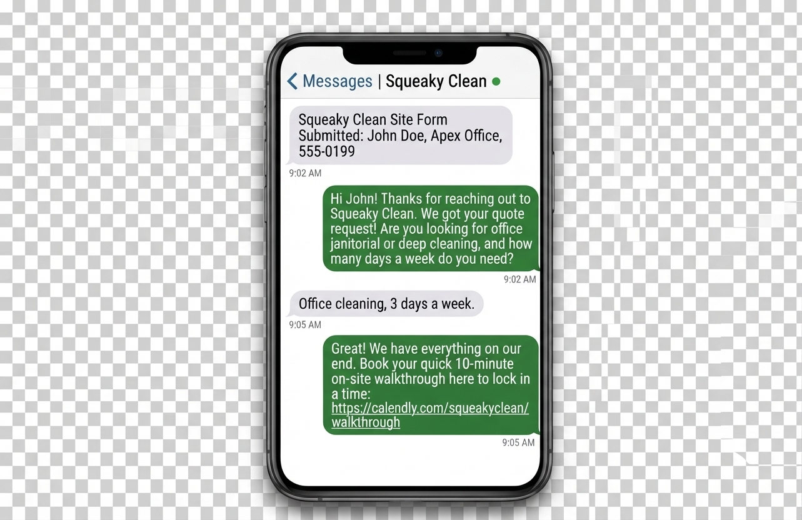

Land 3 to 5 Extra Commercial Walkthroughs Every Week... Without Buying Retyped Lead Lists or Hiring Expensive Callers.
Running crews and managing jobs leaves zero time to waste on messy spreadsheets, 50 open tabs, and outdated lead lists.
Walkthrough Scout pulls business details straight off Google Maps, Yelp, and BBB into your browser side-panel—so you can run a clean 30-minute dial sprint, take notes, and set callback alerts without leaving the tab.
🔒 Free 15-minute 1-on-1 onboarding with Floyd included. • Cancel anytime.

Built for the Owner Who Does It All
Managing crews, checking job sites, and doing quotes yourself? When you have less than 15 employees, you don't have 4 hours a day to sit in front of a computer. You need a simple 30-minute daily routine you can run between site visits.
Watch a Live Prospect Say "NO"—And See How Simple Questions Turned It Into a Walkthrough in 2 Minutes.
Cold calling isn't about having a smooth sales pitch. Watch Floyd handle a real brush-off live off Google Maps using Walkthrough Scout's side-panel workspace.
Walkthrough Scout keeps your scripts, notes, and callback alerts visible right next to Google Maps so you never fumble during a call.
Stop Leaving Money on the Table When You're Out on Job Sites
When a potential commercial client requests a quote on your website while you're scrubbing floors or checking crews, every minute you wait to respond costs you the contract. We set up an automated engine so your site replies instantly.

(Click image to expand full conversation screen)
What We Build For You:
-
✓
Instant 15-Second Text-Back:
Instantly texts leads the second they submit your website form so they never call your competitor.
-
✓
Automated Qualification:
Asks key questions automatically (type of facility, days per week needed) before locking in a time.
-
✓
Seamless Calendar Booking:
Sends your Calendly link automatically so the walkthrough drops straight onto your phone calendar.
Have questions about Sales Training or custom web upgrades? We'll cover everything on the call.
Want Me to Personally Help You Set It Up & Work Your First Dial?
You don't have to figure this out alone. When you join today, you get a direct 1-on-1 15-minute setup session with me (Floyd). We'll configure your Chrome side-panel together and answer any questions about your calling approach before you hang up.
- ✔ Personal side-panel setup and configuration
- ✔ Quick script review for your commercial market
- ✔ Zero technical headache
"I Almost Threw Up Looking at the Available Tools..."
I’m Floyd—a JavaScript developer who was setting commercial cleaning walkthrough appointments on the front lines.
When I started making dials, I looked at the software tools on the market and almost threw up. Every option was either way too expensive (forcing you to buy recycled, bad lead lists) or overly complicated enterprise CRMs that required a PhD to set up.
I didn't want messy spreadsheets, 50 open tabs, and disconnected dialers. So I literally built Walkthrough Scout to make my own job easier.
Master the system yourself first—then hand it off.
It’s the exact same side-panel system I used to set walkthroughs. Learn the simple 30-minute routine yourself first. Once you know how simple it is, handing it off to someone else on your team is easy—whether that's a part-time cleaner who wants to earn extra commission or a caller you hire off Upwork.
— Floyd, founder & developer of Walkthrough Scout
Don't Start with 4 Hours on the Phone. Start with 30 Minutes.
Most cleaning owners fail at outbound sales because they try to force a massive 4-hour calling marathon on day one, burn out, and quit. Scout is built to help you stack small, daily wins instead.
30 Mins / Day
Set a single 30-minute sprint block every morning. Grab 15 prospects off Google Maps and make your dials before your daily site visits start.
Two 30-Min Blocks
Once the morning block feels effortless, add a second 30-minute block in the afternoon to follow up on callbacks and log walkthrough quotes.
The 2-Hour Engine
2 hours a day is the absolute ceiling for a commercial pipeline. Keep doing it yourself or hand the exact 2-hour daily Scout workspace off to an internal caller or VA.
Less Tool-Juggling. More Walkthroughs Booked.
Eliminate procrastination paralysis, work dials systematically, and keep every follow-up visible.
Capture Local Prospects Instantly
Grab business names, addresses, and phone numbers off Google Maps, Yelp, and BBB in one click. Spend 100% of your prospecting time having conversations instead of retyping data.
30-Minute Sprint Timers
Overcome phone hesitation with built-in sprint blocks and dial counters. Lock in for a 30-minute block, watch your dial count tick up, and build a consistent daily prospecting habit.
Callbacks That Never Get Lost
When a prospect says "Try me back next month," log your notes and set a reminder instantly. Step back into the conversation with full context while your competitors forgot they existed.
Eliminate Windshield Time
Pull up Google Maps satellite view to measure square footage and estimate layout right from your side-panel. Qualify accounts before driving across town—and eventually host remote video walkthroughs.
How Do You Want to Grow Your Commercial Cleaning Business?
Walkthrough Scout
Perfect for owners or internal callers who want a clean, fast prospecting workspace to pull data off Google Maps and work dials systematically.
- ✓ Chrome extension side-panel workspace
- ✓ Google Maps, Yelp & BBB contact capture